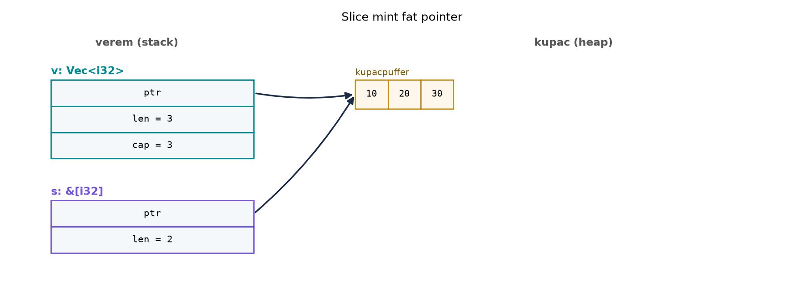

C++-ban több visszatérési értéket általában
std::pair-rel, std::tuple-pal vagy kimenő
paraméterekkel adunk vissza; a strukturált kötés (structured
binding) C++17 óta teszi ezt kényelmessé. A tömböknél a C++
fejlesztő hozzászokott ahhoz, hogy a
std::vector/std::array
operator[]-je általában nem ellenőrzi a határokat, és a
hibás indexelés definiálatlan viselkedést okozhat. Rust ezt a két
területet alapvetően másként kezeli: a tuple és a destrukturálás nyelvi
szintű, a tömbindexelés pedig mindig határellenőrzött, és a biztonságos
alternatíva Option-t ad vissza. Ebben az alfejezetben
ezeket az alapvető típusokat nézzük meg, majd bevezetjük a slice
fogalmát, amely a Rust referenciavilág egyik legfontosabb eleme.
Definíció. A tuple heterogén, fix méretű érték,
amely több különböző típusú értéket csomagol egybe. A típusa
(T1, T2, ...), például (i32, String, bool). A
mezők elérése nullától indexelt: t.0, t.1,
stb. A tuple literálja (érték1, érték2, ...). A zéró elemű
tuple az egység (unit) típus: (), amely a C++
void-hoz hasonlítható, de értékként is létezik.
Definíció. A tömb típusa [T; N], ahol
N a típus része, és fordítási időben ismert. Például
[i32; 5] öt darab i32-et tartalmaz. A méret
nem változtatható futás közben; dinamikus méretű gyűjteményekhez
Vec<T>-t használunk, amelyről később lesz szó.
Definíció. A slice-típus [T]
egy folytonos, T elemekből álló sorozat, amelynek hossza
fordítási időben nem ismert (dinamikus méretű,
!Sized típus). Önmagában nem hozható létre változóként,
mindig mögötte van valamilyen mutató. A leggyakoribb alakok:
| Típus | Tulajdonol? | Sized? |
Metaadat | Megjegyzés |
|---|---|---|---|---|
[T] |
– (típus, nem érték) | nem | – | dinamikus méretű; csak mutató mögött használható |
&[T] / &mut [T] |
nem, kölcsönzött nézet | igen (két gépi szó) | hossz (len) |
fat pointer: mutató + hossz; a hossz az elemek száma, nem bájtok |
Box<[T]> |
igen | igen (két gépi szó) | hossz | kupacon tulajdonolt szelet, nincs kapacitás |
Vec<T> |
igen | igen (három gépi szó) | hossz + kapacitás | növelhető puffer |
[T; N] |
igen | igen | – | a méret a típus része |
Az, hogy egy konkrét &[T] mögötti elemek a veremben
vagy a kupacon vannak, a példa ténye, nem a típus tulajdonsága: ugyanaz
a &[i32] mutathat tömbre (verem) és Vec-re
(kupac) is.
Szabály. A tömb és slice indexelése a
[] operátorral mindig határellenőrzött. Ha az index kívül
esik a tartományon, a program pánikba esik
(panic!); ez nem definiálatlan viselkedés, hanem jól
meghatározott hiba. A pánik hatása a panic stratégiától
függ: az alapértelmezett panic = "unwind" mellett a
pánikoló szál verme lecsévélődik (a Drop implementációk
lefutnak), a többi szál tovább fut, a szál join()-ja
Err-t ad, a main szál pánikja pedig a
folyamatot 101-es kilépési kóddal állítja le;
panic = "abort" mellett az egész folyamat azonnal leáll,
lecsévélés nélkül. (A részleteket a Result, a ?
operátor és a panic helye és a Szálak, Send és
Sync alfejezet tárgyalja ugyanezzel a két stratégiával.) A
get(index) metódus Option<&T>-t ad
vissza: Some a sikeres, None a hibás
indexre.
Szabály. A &[T] slice nem
tulajdonos; a mögöttes elemeket mindig egy tömb,
Vec<T>, Box<[T]> vagy más tároló
birtokolja. A let s: [i32] (a nyers [T] típus
mint változó) nem fordul le, mert a méret nem ismert fordítási időben. A
slice-ok élettartamát a kölcsönzés-ellenőrző garantálja, így nincs
felszabadított memóriára mutató érvénytelen slice.
A több visszatérési érték C++-ban std::tuple-pal és
strukturált kötéssel:
#include <string>
#include <tuple>
std::tuple<int, std::string> parse(const std::string& line) {
auto pos = line.find(':');
if (pos == std::string::npos) {
return {0, line};
}
return {
std::stoi(line.substr(0, pos)),
line.substr(pos + 1)
};
}
// Használat:
auto [code, text] = parse("42:hello");Rustban a tuple a nyelv része, és a destrukturálás közvetlenül
let-ben történik:
use std::num::ParseIntError;
fn parse(line: &str) -> Result<(i32, &str), ParseIntError> {
match line.split_once(':') {
// Nincs elválasztó: a C++-változathoz hasonlóan (0, teljes sor).
None => Ok((0, line)),
// Van elválasztó: a szám rész hibája Err, nem pánik.
Some((number, text)) => number.parse().map(|code| (code, text)),
}
}
// Használat:
let (code, text) = parse("42:hello").unwrap(); // (42, "hello")A split_once(':') az első : mentén két
részre bont, és None-t ad, ha nincs elválasztó; így nincs
kézi indexszámítás (pos + 1), amely elválasztó nélkül a sor
végén túlra mutatna és pánikot okozna. A viselkedés nem teljesen
egyenértékű a C++-változatéval: a std::stoi
kivételt dob hibára (a Rust Err-t ad), ráadásul elfogadja a
numerikus előtagot ("42abc" → 42) és a vezető
szóközt, míg a Rust parse a teljes szövegre egyezést kér,
és a vezető whitespace-t elutasítja (a 11.1 részletesen tárgyalja).
| Bemenet | C++ parse |
Rust parse |
|---|---|---|
"42:hello" |
{42, "hello"} |
Ok((42, "hello")) |
"42" |
{0, "42"} |
Ok((0, "42")) |
"hello" |
{0, "hello"} |
Ok((0, "hello")) |
"" |
{0, ""} |
Ok((0, "")) |
"x:hi" |
std::invalid_argument kivétel |
Err(ParseIntError) |
A különbség: Rustban nincs std::tuple sablonosztály,
mert a tuple beépített típus; a destrukturálás nem igényel C++17-es
kiterjesztést, és a &str slice élettartamát a borrow
checker követi. A használati példában az .unwrap() csak a
rövidség miatt szerepel; a Result kezeléséről a Result, a ? operátor és a panic helye alfejezetben
lesz szó.
A tömbindexelés C++-ban gyakran ellenőrizetlen, Rustban mindig ellenőrzött. Két külön esetet kell megkülönböztetni: azt, amelyet a fordító fordításkor kimutat, és azt, amelyet csak futáskor ellenőriz.
#include <array>
std::array<int, 3> a{1, 2, 3};
int x = a[5]; // UB: definiálatlan viselkedéslet a = [1, 2, 3];
// let x = a[5]; // FORDÍTÁSI HIBA: this operation will panic at runtime
// // (unconditional_panic lint, alapból deny): konstans index, ismert hosszHa az index csak futáskor derül ki, a fordító nem tudja eldönteni, és az ellenőrzés futáskor lép életbe:
let a = [1, 2, 3];
let i = std::env::args().count() + 4; // futásidőben kapott index (itt: 5)
let x = a[i]; // FUTÁSI PANIC: index out of bounds: the len is 3 but the index is 5A biztonságos alternatíva Rustban:
let a = [1, 2, 3];
match a.get(5) {
Some(v) => println!("{v}"),
None => println!("nincs ilyen index"),
}C++20-tól a std::span<const int> hasonló szerepet
tölt be, mint a Rust &[i32], de a Rust slice-ot a
borrow checker életciklus-szabályai védik, és nem lehet null, valamint a
hossza mindig érvényes a mutatójával együtt.
Vegyünk egy olyan függvényt, amely egy slice minimumát, maximumát és összegét adja vissza tuple-ben. A szándékosan naiv változat indexeléssel kezdődik, és üres bemenetre futásidejű hibát okoz:
fn min_max_sum(values: &[i32]) -> (i32, i32, i32) {
let mut min = values[0]; // üres slice-nál panic!
let mut max = values[0];
let mut sum = 0;
for &v in values {
min = min.min(v);
max = max.max(v);
sum += v;
}
(min, max, sum)
}
fn main() {
let arr = [15, -3, 22, 7, 10];
let middle: &[i32] = &arr[1..4];
println!("middle = {middle:?}");
let (min, max, sum) = min_max_sum(middle);
println!("min = {min}, max = {max}, sum = {sum}");
}A middle kimenete [-3, 22, 7], a
statisztika pedig min = -3, max = 22, sum = 26. Ha a
bemeneti slice üres, például &arr[..0], a
values[0] kifejezés pánikba esik:
panic! index out of bounds. Ez hasonlít a C++
std::array ellenőrizetlen hozzáféréséhez, de itt nincs UB,
hanem kontrollált leállás.
A naiv változatnak két hibája van: üres bemenetre pánikol
(values[0]), és az i32 összeg túlcsordulhat
(debugban pánikkal, releaseben wrappinggel). A javított változat a két
hibát külön hibaértékként adja vissza, ezért
Option helyett Result-ot használ: a
None ugyanis nem árulná el, hogy a bemenet üres volt, vagy
az összeg túlcsordult. Az összeg típusa i32 marad (a
függvény előfeltétele: az összeg beleférjen), a túlcsordulást
checked_add jelzi:
#[derive(Debug, PartialEq)]
enum StatsError {
Empty, // üres slice: nincs minimum, maximum
Overflow, // az i32 összeg túlcsordult
}
fn min_max_sum(values: &[i32]) -> Result<(i32, i32, i32), StatsError> {
let (first, rest) = values.split_first().ok_or(StatsError::Empty)?;
let (mut min, mut max, mut sum) = (*first, *first, *first);
for &v in rest {
min = min.min(v);
max = max.max(v);
sum = sum.checked_add(v).ok_or(StatsError::Overflow)?;
}
Ok((min, max, sum))
}A checked_add balról jobbra halad, ezért a
köztes összegeknek is bele kell férniük i32-be: az
[i32::MAX, 1, -1] is Err(Overflow)-t ad, bár a
végösszeg belefér. Ha a cél csak a végösszeg beleférése, szélesebb
akkumulátor kell (lásd a describe feladatot).
Meghatározott viselkedés (ellenőrizve): [-3, 22, 7] →
Ok((-3, 22, 26)); üres slice → Err(Empty);
[i32::MAX, 1] → Err(Overflow); negatív elemek:
[-5, 3] → Ok((-5, 3, -2)). A ?
itt Result-ban működik: az ok_or az
Option-t Result-tá alakítja, és a hibát
azonnal továbbítja. A main mindkét esetet kezelni
tudja:
match min_max_sum(&arr[..0]) {
Ok((min, max, sum)) => println!("min = {min}, max = {max}, sum = {sum}"),
Err(StatsError::Empty) => println!("A bemeneti slice üres."),
Err(StatsError::Overflow) => println!("Az összeg túlcsordulna."),
}A min.max(v) és min.min(v) metódusok a
std::cmp::Ord trait által biztosítottak, és idiomatikusan
fejezik ki a szándékot.
A slice fat pointer felépítését a következő memóriaábra szemlélteti.
Az egyszerűség kedvéért a cél egy Vec, mert annak a
kupacpuffere jól ábrázolható; a tömb slice esetén a cél a stacken lenne,
de a pointer célja ugyanolyan.

A v egy Vec<i32>, amely a stacken
három mezőt tart: a kupacpufferre mutató ptr-t, az aktuális
elemszámot (len = 3) és a lefoglalt kapacitást
(cap = 3). Az s slice szintén a stacken van,
de csak két mezője van: ptr és len = 2. Nincs
külön kapacitás, mert a slice nem birtokol; a mögöttes puffer
életciklusát a borrow checker a kölcsönzés idejére biztosítja. A
szöveges példában &arr[1..4] esetén a cél a stacken
lévő tömb, a hossz pedig három, de a fat pointer elve ugyanaz.
Továbbvitt eredmény. A fat pointer gondolata – az,
hogy egy referencia több adatot hordozhat, mint egyetlen gépi cím – a Slice-ok, String és &str, UTF-8 alfejezetben a
String/&str párosnál, a Trait objektumok és dinamikus diszpécs alfejezetben
pedig a dinamikus dispatch-nél tér vissza.
A [] határellenőrzés figyelmen kívül
hagyása. A C++ fejlesztő azt gondolhatja, hogy a Rust
a[i] ugyanolyan olcsó, mint a C++ a[i] release
módban. Bár a Rust határellenőrzése általában kicsi többletköltséggel
jár, forró ciklusokban érdemes az iterátorokat vagy a
get-et használni, mert az előbbieknél a fordító gyakran el
tudja távolítani a fölösleges ellenőrzéseket. A get és a
map/and_then kombinációja ráadásul
kifejezőbb.
A get után azonnali
unwrap. Az arr.get(i).unwrap()
ugyanarra a hibásindex-viselkedésre vezet, mint az arr[i]
indexelés – mindkettő pánikol –, de a diagnosztika eltér: az indexelés
index out of bounds: the len is 3 but the index is 5, a
get(i).unwrap() pedig
called `Option::unwrap()` on a `None` value üzenetet ad. A
stílus is rosszabb, mert az Option kezelését elrejti. Ha a
hívó tudja, hogy az index érvényes, akkor a [] a megfelelő;
ha nem tudja, akkor az Option-t kell kezelni
match-csel, if let-tel vagy
?-tel.
A tuple mezők számozásának félreértése. A Rust
tuple mezői nullától kezdődnek, mint a C++
std::get<0> indexei. A (1, 2, 3).3 nem
fordul le, mert nincs negyedik mező. A destrukturálás megkerüli a
.0/.1 jelölést, és olvashatóbb kódot
ad.
A slice mint „pointer + hossz” félreértelmezése.
Bár a slice valóban fat pointer, a Rust típusrendszerében a hossz a
stacken lévő érték része, és a mutató nem lehet null. A C++
std::span-hez képest a Rust slice-ot a borrow checker is
védi, ezért nem fordul elő felszabadított memóriára mutató slice, és a
&mut [T] slice egyedüliségét a kölcsönzési szabály
garantálja.
Lefordul-e és miért? Vizsgáljuk meg az alábbi kódot:
let tuple = (1, 2, 3);
let x = tuple.3;Fordul-e a kód? Ha nem, miért, és mi a javítás?
C++-kód átírása idiomatikus Rustra. Adott a
következő C++ függvény, amely egy
std::array<int, 4>-ből visszaadja az első és az
utolsó elem különbségét, ha a tömb nem üres:
#include <array>
#include <optional>
std::optional<int> first_last_diff(const std::array<int, 4>& a) {
return a.front() - a.back(); // ha üres lenne, UB lenne
}Írjunk Rust függvényt, amely &[i32] slice-ra
Option<i32>-t ad vissza (first - last),
és nem indexeléssel, hanem first() és last()
metódussal dolgozik. Üres slice-ra és túlcsordulás esetén
None legyen az eredmény. (A C++-változat
std::array<int, 4>-e sosem üres, de egy
std::span-t vagy std::vector-t fogadó
változatnál a front() üres tárolóra UB, és az
int kivonás is túlcsordulhat.)
Implementációs feladat. Hozz létre önálló
r006 crate-et a ~/rust-labor/r006/ könyvtárban
(cargo new r006 --bin). A main.rs tartalmazzon
egy describe függvényt, amely egy &[i32]
slice-ra visszaad egy (i32, i32, i64, f64) tuple-t:
minimum, maximum, összeg és átlag. Használj split_first-et
és Option-t, hogy üres slice esetén ne pánikoljon, és
i64 akkumulátort, hogy az összeg ne csorduljon túl. A
main-ben készíts slice-ot egy tömb egy részéből, és írd ki
a tuple mezőit.
Hibajavítás és refaktorálás. Az alábbi kód
arr.get(i).unwrap()-ot használ, ami pánikot okozhat:
fn print_element(arr: &[i32], i: usize) {
let v = arr.get(i).unwrap();
println!("elem = {v}");
}Refaktoráljuk a függvényt úgy, hogy ne pánikoljon, hanem
Option-t adjon vissza, vagy match-csel írjon
ki üzenetet. Melyik a jobb API-tervezés, és miért?
Lefordul-e és miért? A kód nem fordul le. A hiba
lényege no field '3' on type '(i32, i32, i32)'; a tuple
mezői nullától indexeltek, ezért a legnagyobb érvényes index a
2. A javítás a harmadik elemhez
let x = tuple.2; vagy ezzel egyenértékűen
let (_, _, x) = tuple;; mindkettőnél x == 3.
(A let (x, _, _) = tuple; az első elemet adná,
x == 1, tehát nem egyenértékű javítás; ha csak tetszőleges
érvényes hozzáférés a cél, akkor tuple.0 vagy
tuple.1 is megfelel.)
C++-kód átírása idiomatikus Rustra.
fn first_last_diff(a: &[i32]) -> Option<i32> {
let first = a.first()?;
let last = a.last()?;
first.checked_sub(*last) // first - last, mint a C++ front() - back()
}
fn main() {
assert_eq!(first_last_diff(&[1, 2, 3, 4]), Some(-3));
assert_eq!(first_last_diff(&[]), None);
assert_eq!(first_last_diff(&[i32::MIN, 1]), None); // túlcsordulna
println!("ok");
}A first() és last() metódusok a slice-API
részei, és Option<&i32>-t adnak vissza. A
? a None esetén azonnal visszatér, így az üres
slice nem pánikol; a checked_sub a túlcsordulást is
None-ként jelzi. A kivonás iránya a C++-éval egyezik:
front() - back(), tehát [1, 2, 3, 4]-re
-3. Egy [i32; 4] tömb is átadható, mert a
&[i32; 4] automatikusan &[i32]-vé
alakul.
Implementációs feladat. A
main.rs:
fn describe(values: &[i32]) -> Option<(i32, i32, i64, f64)> {
let (first, rest) = values.split_first()?;
let mut min = *first;
let mut max = *first;
// i64 akkumulátor: az i32 elemek összege legfeljebb 2^32 elemig biztosan belefér;
// a szignatúra nem korlátozza a szelet hosszát, ennél hosszabb szeletre checked_add vagy i128 kell.
let mut sum = i64::from(*first);
for &v in rest {
min = min.min(v);
max = max.max(v);
sum += i64::from(v);
}
let avg = sum as f64 / values.len() as f64;
Some((min, max, sum, avg))
}
fn main() {
let arr = [8, 3, 12, 5, 9, 1];
let part: &[i32] = &arr[1..5];
match describe(part) {
Some((min, max, sum, avg)) => {
println!("min = {min}, max = {max}, sum = {sum}, átlag = {avg:.2}");
}
None => println!("A slice üres."),
}
}A cargo run kimenete:
min = 3, max = 12, sum = 29, átlag = 7.25. A
part slice a [3, 12, 5, 9] elemet fedi
le.
Hibajavítás és refaktorálás. A
get(i).unwrap() helyett a függvény Option-t ad
vissza:
fn print_element(arr: &[i32], i: usize) -> Option<()> {
let v = arr.get(i)?; // hibás indexnél itt None-nal kilép, nem ír ki semmit
println!("elem = {v}");
Some(()) // a siker jelzése
}A visszatérési szerződés: Some(()), ha az elem létezett
és kiírtuk, None, ha az index érvénytelen (ekkor semmi nem
íródik ki). Az () itt azt jelenti, hogy a sikernek nincs
további adata; a hívó csak azt tudja meg, hogy volt-e elem. Tisztább
tervezés, ha a lekérdezést és a kiírást szétválasztjuk: a könyvtár csak
arr.get(i)-t ad, a kiírásról a hívó dönt. Vagy a hívó
oldalon történik a kezelés:
match arr.get(i) {
Some(v) => println!("elem = {v}"),
None => println!("nincs ilyen index"),
}Az Option-t visszaadó változat jobb API-tervezés, mert a
hívó döntheti el, hogyan kezeli a hibát, nem a könyvtár függvénye
pánikol. A match-es változat a különálló side effect esetén
is gyakori, de nem helyettesíti a hibaterjesztést.
A tuple Rustban beépített heterogén, fix méretű típus;
destrukturálása let (a, b) = t; alakban történik, és így a
C++ std::tuple/std::tie/structured binding
kényelmét nyújtja. A tömb [T; N] mérete a típus része. Az
indexelés [] operátorral mindig határellenőrzött, hibás
indexnél panic! lép fel, nem UB; a get(i)
Option<&T>-t ad. A slice &[T]
fat pointer: mutató és hossz, nem tulajdonos nézet, és a borrow checker
garantálja az élettartamát. Továbbvitt eredmény: a fat
pointer gondolatát a &str és &[T]
részletes tárgyalása a Slice-ok, String és &str,
UTF-8, valamint a dinamikus dispatch a Trait
objektumok és dinamikus diszpécs alfejezetben viszi tovább.
A tuple, a tömb, a get és a slice stabil nyelvi elemei;
a hivatalos leírások a Rust Reference és a Rust Book dokumentációjában
találhatók. A példákban szereplő pontos panic! üzenetek és
a fordító hibaüzeneteinek szövege verziófüggő; ellenőrzésre érdemes a
fejezet készítésekor használt toolchainen. A split_first,
first, last és a
min/max metódusok a standard könyvtár stabil
API-jának részei, de a pontos szignatúrákat a docs.rs-en érdemes
ellenőrizni.